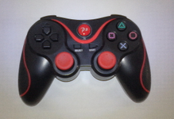
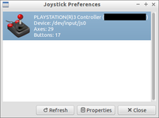

ShanWan Fake PS3 DualShock3 Sixaxis Controller per Bluetooth
Achtung!
Die Verwendung dieses Howto geschieht auf eigene Gefahr. Bei Problemen mit der Anleitung melde dies bitte in der dazugehörigen Diskussion und wende dich zusätzlich an den Verfasser des Howtos.
Hinweis:
Diese Howto-Anleitung wurde zuletzt von J4Y am 18.04.2015 unter Lubuntu 14.04.2 Desktop i386 erfolgreich getestet.
Problembeschreibung¶
Im Wiki-Artikel PS3 Controller findet man zwar eine Anleitung für PS3-Controller - allerdings funktioniert die nur für Original-Controller. Für alternative Controller reicht die Anleitung leider nicht aus, obwohl die Controller größtenteils kompatibel sind und zum Beispiel direkt mit der PlayStation funktionieren.
Anleitung¶
Quellen:
|  |
| ShanWan Controller |
Controller:
Bei dem mit dieser Anleitung getesteten Controller ist als Hersteller ShanWan angegeben. Kaufen kann man kompatible Controller schon sehr preiswert für irgendwas zwischen 5 und 10 Euro - zum Beispiel bei eBay.
Voraussetzungen:
Bluetooth
Internetverbindung für Softwareinstallationen
kompatibler Controller
passendes USB-Kabel
eventuell Büroklammer
Installationsschritte:
Zunächst den Controller per USB-Kabel verbinden und einen Moment warten. dmesg sollte eine ähnliche Ausgabe zeigen:
[ 673.008102] usb 2-2: new full-speed USB device number 4 using ohci-pci [ 673.226707] usb 2-2: New USB device found, idVendor=054c, idProduct=0268 [ 673.226717] usb 2-2: New USB device strings: Mfr=1, Product=2, SerialNumber=0 [ 673.226722] usb 2-2: Product: PLAYSTATION(R)3 Controller [ 673.226726] usb 2-2: Manufacturer: ShanWan [ 673.261873] sony 0003:054C:0268.0003: Fixing up Sony Sixaxis report descriptor [ 673.301856] input: ShanWan PLAYSTATION(R)3 Controller as /devices/pci0000:00/0000:00:13.0/usb2/2-2/2-2:1.0/0003:054C:0268.0003/input/input11 [ 673.307040] sony 0003:054C:0268.0003: input,hiddev0,hidraw0: USB HID v1.10 Joystick [ShanWan PLAYSTATION(R)3 Controller] on usb-0000:00:13.0-2/input0
ShanWan war hier das Stichwort, das letztendlich bei den Recherchen zum Erfolg geführt hat. Sollte hier schon eine deutliche Abweichung festgestellt werden, kann man die Anleitung natürlich trotzdem mal weiter befolgen und testen, ob nicht auch andere alternative Controller kompatibel sind und sich auf diesem Weg installieren lassen.
Falls die Bluetooth-Dienste von Ubuntu noch nicht aktiviert sind, sollte das jetzt passieren. Ein eventuell benötigter Bluetooth USB-Dongle muss eingesteckt werden - internes Bluetooth funktioniert natürlich auch. Folgende Befehle ausgeführen:
sudo service bluetooth restart hciconfig --all
Fehlt noch die Software.
Teilweise wird aus den Paketquellen installiert:
sudo apt-get update sudo apt-get install joystick jstest-gtk build-essential pkg-config pyqt4-dev-tools libusb-dev libjack-dev libdbus-1-dev libdbus-glib-1-dev libbluetooth3 libbluetooth-dev
Der andere Teil beinhaltet die Quelldateien von https://github.com/yarick123/qtsixa/tree/feature/SHANWAN_FAKE_DS3. Diese müssen geladen werden - zum Beispiel per ZIP-Datei, die nach dem Download entpackt wird. Auf welchem Weg auch immer die Dateien besorgt wurden - das Verzeichnis mit den Quelldateien sollte per ls so aussehen:
COPYING Makefile TODO manual.pdf sixad INSTALL README manual.odt qtsixa utils
Eine kleine Änderung an der Makefile muss noch vorgenommen werden. Dann kann kompiliert werden:
mv sixad/Makefile sixad/Makefile.old echo "SHANWAN_FAKE_DS3 = true" > sixad/Makefile cat sixad/Makefile.old >> sixad/Makefile make sudo make install
Die restlichen Schritte orientieren sich stark am oben schon verlinkten Wiki-Artikel PS3 Controller. Dem Controller muss die Bluetooth-Adresse des Computers mitgeteilt werden:
sudo sixpair
Anschließend wird das USB-Kabel vom Controller getrennt. Folgende drei Programme müssen gestartet werden:
jstest-gtk & qtsixa & sixad --start
jstest-gtk ist eine Übersicht über die Funktionen des Controllers und bietet Kalibrierungsmöglichkeiten. qtsixa startet die Oberfläche QtSixA, über die aktuell vorhandene Verbindungen zu Controllern erkannt werden können. Und sixad belegt die Bluetooth-Verbindung und übernimmt die Suche nach Controllern in der Nähe. Beim ersten Start klappte das allerdings nicht direkt:
D-Bus setup failed: Name already in use sixad-bin[15250]: started sixad-bin[15250]: sixad started, press the PS button now
Der Controller blinkt schnell, die Bluetooth Adresse erscheint kurz im QtSixA und verschwindet nach kurzer Zeit wieder. Das Drücken des PS-Knopfes macht keinen Unterschied.
Also wird sixad mit
Strg +
C gestoppt und der Controller über den mit einer aufgebogenen Büroklammer an der Rückseite zugänglichen RESET-Knopf zurückgesetzt. Das ist jedoch wie schon geschrieben nur beim ersten Mal so der Fall - später ist der Büroklammer-RESET zum Verbinden nicht mehr nötig. Die gespeicherte Bluetooth-Adresse wird durch den RESET auch nicht beeinflusst.
sixad starten und am Controller die PS-Taste drücken:
sixad --start
Es erscheint:
sixad-bin[15919]: started sixad-bin[15919]: sixad started, press the PS button now sixad-sixaxis[15963]: started sixad-sixaxis[15963]: Connected 'PLAYSTATION(R)3 Controller (XX:XX:XX:XX:XX:XX)' [Battery FF]
|  |
| Screenshot jstest-gtk |
QtSixA zeigt die Bluetooth Adresse wieder und dieses Mal verschwindet sie auch nicht. Der Controller vibriert kurz. Dann kann man im jstest-gtk die Liste aktualisieren, die den Controller als neuen Eintrag enthalten sollte.
Es funktionieren alle 17 Knöpfe, die beiden Analog-Sticks, sowie die Motion-Sensoren für Neigung zu den 4 Seiten.
Links¶
Urspünglicher Foren-Eintrag Tutorial: 7,29 EUR ShanWan Fake PS3 DualShock3 Sixaxis Controller per Bluetooth
Howto
 - Übersicht aller Howto-Artikel
- Übersicht aller Howto-Artikel
- Erstellt mit Inyoka
-
 2004 – 2017 ubuntuusers.de • Einige Rechte vorbehalten
2004 – 2017 ubuntuusers.de • Einige Rechte vorbehalten
Lizenz • Kontakt • Datenschutz • Impressum • Serverstatus -
Serverhousing gespendet von